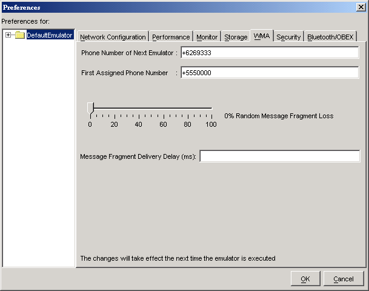
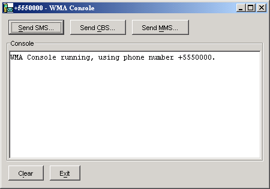
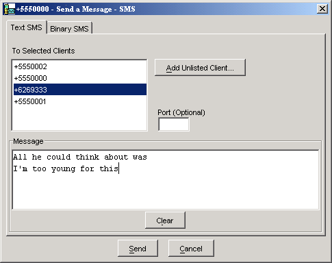
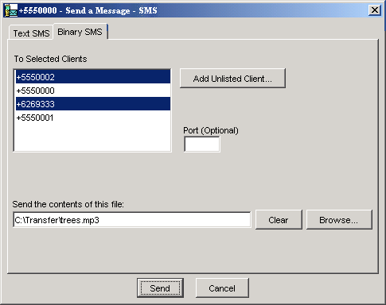
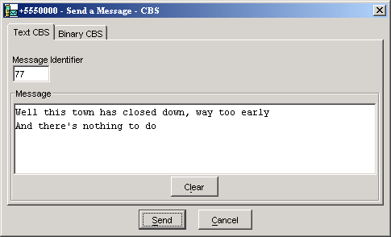
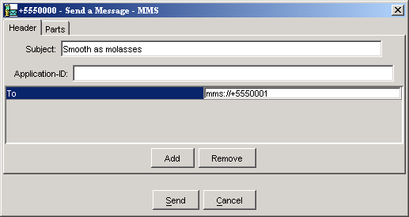
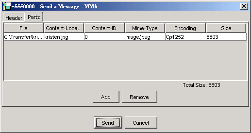
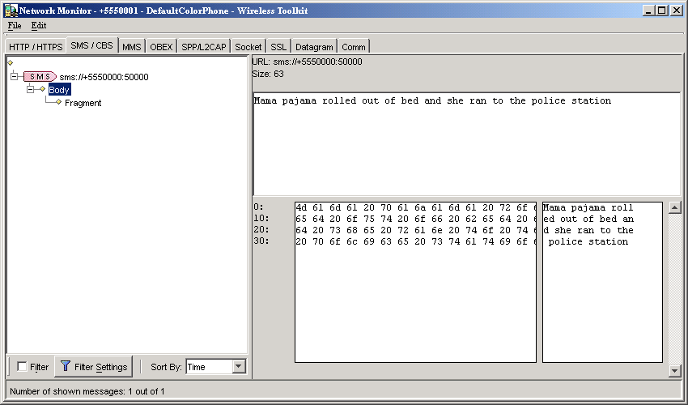

|
|
The J2ME Wireless Toolkit supports the Wireless Messaging API (WMA) with a sophisticated simulation environment. WMA 1.1 (JSR 120) enables MIDlets to send and receive Short Message Service (SMS) or Cell Broadcast Service (CBS) messages. WMA 2.0 (JSR 205) includes support for MMS messages as well.
This chapter describes the tools you can use to develop WMA applications. It begins by showing how to configure the emulator’s support of WMA. Next, you’ll learn about the WMA console, a handy utility for testing WMA applications. The chapter concludes with a brief description of the network monitor’s WMA support.
Each running instance of the emulator has a simulated phone number that is shown in the title bar of the emulator window. The phone numbers are important because they are used as addresses for WMA messages. By default, the first emulator instance has a phone number of +555000. Subsequent instances of the emulator will have unique numbers in ascending order: +5550001, +5550002, +5550003, etc.
You can affect the assigned phone numbers by choosing Edit > Preferences... from the KToolbar menu and clicking on the WMA tab.

The Phone Number of Next Emulator field is just what it sounds like. If you fill in a number for this field, the next emulator instance will have that number.
If the Phone Number of Next Emulator is already in use, or if the field is blank, then the First Assigned Phone Number is used for the next emulator instance. Subsequent instances count up.
For example, suppose you fill in +6269333 for the Phone Number of Next Emulator and +5550000 for the First Assigned Phone Number. If you launch four emulator instances, their numbers will be +6269333, +5550000, +5550001, and +5550002.
Long messages are sent by splitting them up, sending the fragments separately, and reassembling the fragments on the receiving end. You can simulate some of the hazards of the wireless network in the J2ME Wireless Toolkit. As before, choose Edit > Preferences... from the KToolbar menu and click on the WMA tab.
If you’d like the toolkit to lose some message fragments, adjust the Random Message Fragment Loss slider to the desired percentage. If you would like to simulate a delay between the time message fragments are sent and received, enter the delay in milliseconds in the Message Fragment Delivery Delay field.
The WMA console is a handy utility that allows you to send and receive messages. You can, for example, use the WMA console to send SMS messages to a MIDlet running on the emulator.
To launch the WMA console, choose File > Utilities... from the KToolbar menu. Click on Open Console in the WMA box.

To send a text SMS message, click on Send SMS... The send window pops up.

The window automatically lists the phone numbers of all running emulator instances. Select a destination (Control-click to select multiple destinations) and enter a port number if you wish. Type your message and click Send.
You can use the WMA console to send the contents of a file as a binary message. Click on Send SMS... to bring up the send window. Click on the Binary SMS tab.

Selecting recipients is the same as for sending text SMS messages. You can type in the path of a file directly, or click on Browse... to open up a file chooser.
Sending CBS messages is similar to sending SMS messages except that you don’t need to choose recipients. To send a text or binary CBS message, click on Send CBS... in the WMA console. The send window pops up.

MMS messages consist of one or more files, usually images or sounds. MMS message can be sent to multiple recipients. To send an MMS message from the WMA console, click on the Send MMS... button.
The window for composing MMS messages has two tabs, one for recipients and one for content. Begin by filling in a subject and recipient. If you wish to add more recipients, click on the Add button. For example, to send a message to a running emulator whose number is +5550001, you would fill in the To line as mms://+5550001. To remove a recipient, first select its line, then click on Remove.

To add media files to the message, click on the Parts tab. Click on Add to add a part to the message. To remove a part, select it and press Remove.

The WMA console can also receive messages. If you look at the WMA console window, you’ll see it has its own phone number in the title bar. You can send messages to the WMA console from your applications running on the emulator.
Received messages are shown in the WMA console’s text area.
The network monitor was fully described in Chapter 5, “Monitoring Applications.” You can use the network monitor to track WMA messages that are sent to or from the emulator.
Click on the SMS/CBS or MMS tabs to see WMA messages. Information about the messages and their fragments is shown in the left pane of the network monitor. Click on a message or message fragment to see its details in the right pane.

|
|
J2ME Wireless Toolkit User's Guide J2ME Wireless Toolkit 2.2 |
Copyright © 2004 Sun Microsystems, Inc. All rights reserved. Use is subject to the license terms.